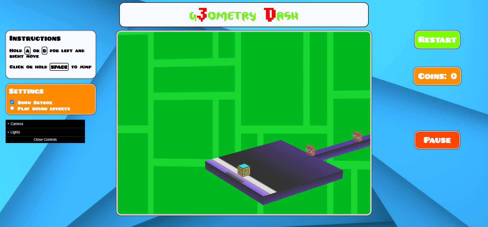
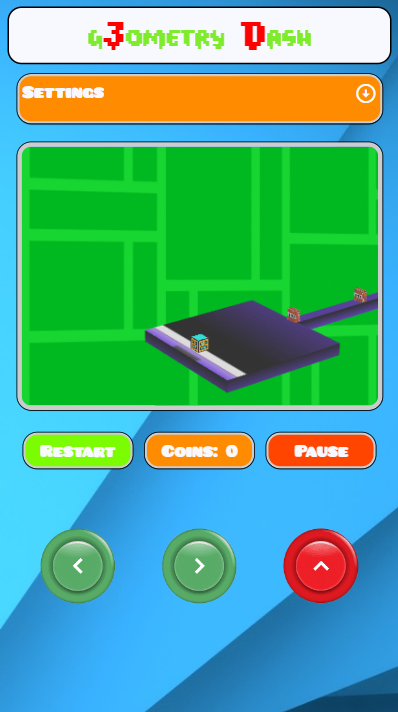

G3OMETRY DASH
Il progetto si ispira al popolare gioco in 2D per dispositivi mobili Geometry Dash
e ne propone una ricostruzione in 3D.
L'obiettivo del gioco è quello di arrivare al traguardo evitando gli oggetti che si trovano sul percorso cercando
di non cadere dalle varie piattaforme. Il giocatore controlla un cubo che va avanti nella mappa automaticamente, facendolo
saltare e muovendolo a destra e sinistra. Nella mappa sono anche presenti 3 monete, utili per completare il gioco al 100%.
Dopo aver avviato il file index.html si presenta la seguente pagina:
La pagina è suddivisa principalmente in tre parti:
Tenendo premuto il TASTO SINISTRO del mouse e muovendo il mouse a destra e sinistra è possibile spostare la camera e tramite la ROTELLA del mouse si può aumentare o diminuire il FieldOfView.
Per quanto riguarda la parte per dispositivi mobili, si è scelto di mostrarla simile ad un gioco "arcade". Quindi, il gioco si presenta come segue:
Tramite i bottoni in basso è possibile muovere il cubo e dalle Settings in alto è possibile attivare lo skybox e la musica.
Nella parte sinistra dello schermo sono presenti le impostazioni:
Di seguito vengono mostrati gli oggetti che è possibile trovare all'interno della mappa:
Per la realizzazione del gioco è stato utilizzato webgl per il canvas, due vertex shader e due fragment shader. Una coppia di shader (vertex-fragment) è stata utilizzata per lo skybox, l'altra coppia per la gestione della camera, delle luci e delle texture. Il progetto è suddiviso in diversi file a seconda delle funzionalità che ricoprono:
Una parte fondamentale del gioco è la fisica del cubo e le collisioni di quest'ultimo con gli oggetti circostanti. Al player viene settata una velocità fissa lungo l'asse x, mentre per gli spostamenti e per il salto viene gestita la velocità anche degli altri assi.
Per quanto riguarda le collisioni, sono state calcolate le bounding box dei vari oggetti, utili per la gestione del gameplay e per poter indicare la reazione del cubo a seconda dell'oggetto con cui viene a contatto.